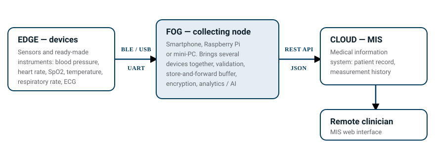

About the competition
A village forty kilometres from the district hospital. A woman needs her blood pressure taken, an ECG recorded, and the result shown to a cardiologist. The village has a paramedic station. What it does not have is instruments that can send the data to a clinician by themselves — so the trip to the district town costs half a day, and often simply does not happen.
Your task is to close that gap with engineering: to design and build a telemedicine kit. A set of instruments that measure health indicators on site, in the community, and send them of their own accord to a medical information system where a remote clinician can read them.
- Applications by15 December 2026
- FinalFebruary 2027, Rivne
- Team2–4 students
- Equipmentbought by the organisers
The competition runs in two stages: first the application and a practical task on our API, then prototype development and the final in Rivne. We plan to present the best solutions at the University of Oxford, UK, in April 2027. The equipment bought for the teams stays with the department and goes on working in later projects.
How it works
The kit has three layers — edge → fog → cloud. The instruments measure, a separate node brings everything together, the MIS stores it:
- Edge — the measuring devices themselves: a sensor or a ready-made instrument that takes a reading at the patient's side and does the first processing of the signal.
- Fog — the node that receives and brings together the data from all those devices, validates it, keeps it when the link drops, and can compute things locally. This can be a Raspberry Pi, a mini-PC or an ordinary smartphone running your app.
- Cloud — the medical information system (MIS) developed in our earlier project; the fog node sends measurements there through an API.

Measured on site
Readings are taken where the patient is, with no trip to the city.
Processed next to the patient
The fog node brings all the devices together, filters and stores data even on a poor connection.
Reviewed remotely
The API carries the data into the MIS, where it becomes part of the patient record.
The measurement set we want
The list has been agreed with the clinical side of the project: this is what we want to see in a kit. Use it as your reference when choosing instruments.
| Measurement | What is sent |
|---|---|
| Blood pressure | Systolic and diastolic, mmHg |
| Heart rate | Beats per minute |
| SpO2 (oxygen saturation) | Percentage; the raw PPG waveform too, if the device exposes it |
| Body temperature | °C, stating the method (contact or infrared) |
| Respiratory rate | Breaths per minute; may be computed from ECG or PPG |
| ECG | At least one lead: the raw trace and heart rate |
The full set counts in your favour, but an incomplete one does not disqualify you. If a measurement is out of reach — most often ECG, which is also the most expensive — say in the proposal why, and what you propose instead.
Further measurements — glucose, spirometry, weight, auscultation — are welcome if you justify the choice.
Comparable systems for reference
Look at what already exists before designing your own. These are reference points for purpose and range of measurements, not templates to copy: their price and their closed nature are precisely the problem we want to get around.
- IDIS2GO (SK-Telemed, Austria) — a portable diagnostic station: ECG, blood pressure, SpO2, glucose, spirometry, temperature.
- TytoCare — a handheld device for remote examination: stethoscope, otoscope, camera, thermometer.
- MedWand — a multi-sensor device the size of a computer mouse: temperature, SpO2, ECG, auscultation, camera.
- HealthyPi (ProtoCentral) — a fully open-source vital signs monitor built on the Raspberry Pi and ESP32: ECG, respiration, PPG, SpO2, temperature. The closest example to our format, with open code and schematics.
Who can enter
Participants
Students of Ukrainian higher education institutions, from any discipline: IT, electronics, biomedical engineering, medicine, design.
Team size
Two to four people. A faculty mentor may advise the team; the mentor does not count towards the limit and does not do the students' work.
Interdisciplinary teams and teams drawn from several universities are welcome: the kit calls for circuit design, software engineering and an understanding of the clinical workflow alike.
Timeline and deadlines
The competition runs in two stages: selection, based on the application and a practical API task, then prototype development and the final.
The API sandbox opens shortly — roughly one to two weeks after the competition is announced. It comes with the task and a ready-made BRUNO / POSTMAN collection. You can write the proposal and choose components right now: that part does not depend on the API. The final is in February 2027.
Stage I — application and work with the API
The stage has two strands running in parallel: the project proposal and hands-on work with our API. Stage II is for teams that both know what they are going to buy and can work with the API.
-
Right now
Write the project proposal and choose your components.
-
Shortly
The API sandbox opens: documentation, a BRUNO / POSTMAN collection, and the task — send a measurement to the MIS.
-
By 15 December 2026
Submit the form, the project proposal in PDF, and your sandbox identifier (token).
-
At the end of Stage I
The teams going through to Stage II are announced.
Stage II — development and the final
-
Right after the Stage I results
Equipment is purchased and / or funded against the approved applications.
-
Until February 2027
Prototype development with mentor support.
-
February 2027
Hackathon and final demonstration in Rivne.
-
April 2027
Presentation of the best solutions at the University of Oxford, UK.
What to submit for Stage I
1. The completed application form
Application form — team contacts and basic details of the project. By 15 December 2026.
2. A project proposal in PDF
A single PDF following the structure below. Written in Ukrainian or English. By 15 December 2026.
3. Work with the API sandbox
The completed sandbox task, plus your identifier (token) in the application form — we use it to check the data you sent.
Length: no more than 10 A4 pages, i.e. up to 18,000 characters including spaces (about 1,800 characters per page, 12–14 pt type, 2 cm margins). Diagrams, photographs and tables count towards the page limit.
TODO Before the site goes live, replace [посилання на Google Form] with the real form address (the “Apply now” button in the header and the link in this section).
Choosing components
You do not have to build everything from low-level sensors. A ready-made device at a higher level — a blood pressure monitor, pulse oximeter, thermometer, scales, glucometer, portable ECG recorder — is perfectly acceptable and often the wiser choice: your time then goes into architecture and integration rather than into fighting the calibration of a raw signal.
There is one condition: there must be a way to get the data out of the device, without reverse engineering and without an agreement with the manufacturer.
What to look for
- Standard Bluetooth LE profiles — see the Bluetooth SIG specifications: Blood Pressure, Pulse Oximeter, Health Thermometer, Weight Scale, Glucose. Any BLE library can read them.
- An open serial or USB protocol with the frame format documented.
- A documented manufacturer API or SDK that gives access to the raw measurements.
What to avoid
- Devices that hand their data only to the manufacturer's own app or cloud.
- Devices with no technical documentation at all — they will consume the whole project.
- Anything tied to a subscription or an account without which the device will not work.
Instruments with proven accuracy are preferred
Where a reading will inform a clinical decision, we strongly prefer a ready-made medical device whose measurement accuracy has been verified: in the EU that means CE marking under the medical devices regulation, in Ukraine the national conformity mark under the Technical Regulation on Medical Devices. A certified blood pressure monitor, pulse oximeter or thermometer removes a whole class of metrology questions, and your effort goes into architecture and integration instead.
This is a recommendation, not a requirement: a design of your own built on sensors is also accepted. In that case, describe in the proposal how you will verify accuracy — comparison against a certified instrument, repeatability, the error margins you expect.
Finding the specific models is your part of the work: the market moves faster than we can update this page. In the application, state exactly how you will get the data out of each device (BLE profile, API, serial port) — this is one of the key points when we judge whether the plan is realistic.
Structure of the project proposal
Keep this numbering — the judges compare proposals section by section. The block below can be copied as a table of contents.
- Project title and team. Members, roles, contacts, mentor.
- Problem and target user. Who the kit is for and the conditions it will work in.
- Measurements. How you capture the measurements from the set above (blood pressure, heart rate, SpO2, temperature, respiratory rate, ECG), what you leave out and why, and which further ones you chose to add.
- Architecture. Edge devices → fog node → MIS in the cloud via API. A diagram is mandatory.
- Equipment list. A table with the columns: “Component / model”, “Purpose”, “Quantity”, “Approximate price, UAH”, “Shop link”, “Already available or to be purchased”. A total figure is required.
- Software. Languages, frameworks, data format, processing on the fog node, security and personal data protection.
- Use of AI / LLMs. Propose what is worth computing with AI or language models. On the fog node itself, where computing power is scarce: signal quality assessment, rejecting artefacts, selecting or compressing data before transmission, a local model instead of a cloud one. Beyond it, over the data already collected: spotting deviations in trends, a short summary for the clinician, helping the health worker with data entry. This need not be the central idea of the project: a well-argued proposal is enough, and a working prototype counts in your favour.
- Integration with the MIS API. Which data the team plans to send, and in what form.
- Work plan. What you plan to get done before the final, and who in the team is responsible for what.
- Risks and alternatives. What you will do if a component turns out to be unavailable.
- Expected outcome. What exactly will be demonstrated at the competition.
How to lay out the equipment list (item 5)
This is the level of detail we expect: a specific model, a shop and a price, rather than “a pulse sensor”. One row is filled in as a formatting sample — a ready-made medical instrument, which is what we recommend wherever a reading matters clinically.
| Component / model | Purpose | Qty | Approx. price, UAH | Shop link | Available or to buy |
|---|---|---|---|---|---|
| Omron M7 Intelli IT blood pressure monitor (HEM-7380T1-EBK), Bluetooth | Blood pressure and pulse — a ready-made medical device with verified accuracy, read out over Bluetooth | 1 | 5832 | med-magazin.ua | to buy |
| … | … | … | … | … | … |
| Total | sum of all rows | ||||
Prices move — quote the ones current at the time you apply, and always include the shop link so that we can check availability and arrange the purchase.
Equipment and budget
The organisers purchase or fund components against approved applications; decisions are made once the Stage I results are announced, on the basis of the list given in the project proposal.
The budget per team is set by the jury, depending on how well the list is justified and how demanding the design is.
Preference goes to affordable components that are easy to obtain and to replace: the kit has to keep working in a community with no service centre nearby.
Who owns the equipment
Components bought for the competition remain the property of the organisers. Teams have them on loan for the duration of the competition, and after the final the hardware returns to a shared pool used by entrants in subsequent competitions and student projects.
In other words, we are not handing kits out to teams — we are building up a stock of instruments at the department. Please treat the components with care: avoid irreversible modifications where a connector or a bracket would do, and keep the packaging and documentation.
What you produce — code, schematics and documentation — stays with the team; it is the hardware that goes back into the pool.
The medical information system API
The API sandbox is available to every team. To start working with it you register and receive a token; registration is open — you do not have to be selected first. The exact access procedure will be published when the sandbox opens.
You get the documentation, a ready-made request collection for BRUNO or POSTMAN, and the task: send a measurement to the MIS. Put your token in the application and we will look at what your team sent.
The sandbox opens shortly and the links will appear in this section. You can design your architecture right now, from the general integration model below.
What is already known
- Protocol: a REST API exchanging JSON over HTTPS.
- Authentication: a token issued to the team; keys must not be stored in plain text in firmware or source code.
- Direction: the fog node sends measurements to the MIS, which links them to the patient record.
Indicative shape of a single measurement
The snippet below only illustrates what a measurement contains, so that teams can design their fog-node data format. Final field names, endpoints and authentication rules will come from the documentation.
{
"patient_ref": "<patient identifier in the MIS>",
"device": "<device or sensor model>",
"measured_at": "2026-11-20T09:14:00+02:00",
"observations": [
{ "code": "spo2", "value": 97, "unit": "%" },
{ "code": "heart_rate", "value": 74, "unit": "bpm" },
{ "code": "temp_body", "value": 36.8, "unit": "Cel" }
]
}TODO Link to the API documentation: [посилання на документацію API]. Final endpoints, the authentication scheme and the list of observation codes will be added here once the documentation is published — no invented endpoints are given on this page on purpose.
Judging criteria
A working prototype
The kit genuinely measures and transmits data, rather than staying on paper.
Quality of MIS integration
How correctly, completely and reliably measurements travel through the API.
Availability and cost of components
Whether the kit can be reproduced in a community for sensible money.
Engineering quality of code and documentation
Project structure, readability, and build-and-run instructions.
Usability for health workers
Whether a nurse or paramedic can operate the kit without an engineer at hand.
AI ideas
What the team proposes to compute with AI or LLMs, particularly on a low-powered fog node. The idea counts; an implementation counts for more.
Presentation
How clearly the solution is demonstrated and defended before the jury.
Licensing and rights in the results
You publish your code, schematics and documentation in an open repository.
The work stays yours. An open licence only lets other people learn from your solution and build on it, with a credit to you.
| Part of the work | Licence | Why this one |
|---|---|---|
| Code: firmware, app, server side, scripts | Apache License 2.0 | Permits both free and commercial use, addresses patent rights explicitly, and requires attribution to be kept. |
| Hardware: schematics, boards, 3D models, enclosures, drawings | CERN-OHL-P v2 | A licence written specifically for open hardware — the permissive variant. Copyright in schematics works differently from copyright in code. |
| Documentation, instructions, photographs, diagrams, slides | CC BY 4.0 | Text and images can be carried into teaching materials with a credit to the authors. |
What this means in practice
- Open a public repository (GitHub or GitLab) — no later than the final.
- Put in its root the files
LICENSE(Apache-2.0),LICENSE-hardware(CERN-OHL-P v2),LICENSE-docs(CC BY 4.0) andNOTICEwith the project name, the year and the team members. - Add a “Licences” paragraph to the
README: what is covered by which licence.
Ready-made template files are in this site's repository — copy them and fill in your own details.
No separate section in the project proposal is needed for this — confirming in the application form that the team accepts these terms is enough.
Important
These prototypes are educational and are not certified medical devices. They must not be used to diagnose or treat real patients without the relevant approvals, ethics clearance and supervision by medical professionals. For testing, use signal simulators, phantoms, or voluntary measurements among team members.
Contacts
- Competition coordinator
- Viktor Zhukovskyy, PhD, Associate Professor
- Department
- Software Engineering and Artificial Intelligence, NUWEE, Rivne, Ukraine
- v.v.zhukovskyy@nuwm.edu.ua
- Phone / Telegram
- [телефон / Telegram]
Frequently asked questions
Can I enter on my own, without a team?
No. The minimum is two people and the maximum is four. The kit combines hardware, software and integration work, so a division of roles is part of the rules.
Do we have to buy the equipment ourselves?
No. The organisers purchase or fund components against approved applications, once the Stage I results are announced. If you already own some of the parts, mark them as available in the table.
Does the team keep the equipment after the competition?
No. Components bought for you belong to the organisers and return after the final to a shared equipment pool used by entrants in later competitions and student projects. The team has them on loan for the duration of the competition. Parts of your own that you listed as already available remain yours, of course.
Are there any restrictions on the platform or the sensors?
No. You may use any available solution — from a microcontroller with discrete sensors to ready-made devices at a higher level. What matters is that the data can be read out of the device in an open or documented way, that the choice is justified, and that the kit can be reproduced.
Can we use our project after the competition — in a startup, for instance?
Yes. Copyright stays with the team, and neither Apache-2.0 nor CERN-OHL-P forbids commercial use. Note the other side of an open licence: someone else may take your work too, keeping the credit to you.
What if we would rather not open our code and schematics?
An open repository is one of the conditions of entry, so there is no way round it. But open does not mean nobody's: you remain the authors and can go on using your work, commercially included. If one part cannot be opened because of someone else's rights — a device SDK under NDA, say — write that in the proposal and we will consider it separately.
Which language should the proposal be written in?
Ukrainian or English. English is more convenient for the partner and for a possible presentation at the University of Oxford, but the choice of language does not affect scoring.
When do teams get access to the MIS API?
The sandbox goes live shortly — roughly one to two weeks after the competition is announced. Any team can get in: you register, receive a token, and then get the documentation, a BRUNO or POSTMAN request collection, and the task. Your token must be included in the application by 15 December 2026: we use it to confirm that your team really did work with the API.
How many teams will go through to Stage II?
We are not fixing the number in advance. It depends on how many strong applications arrive and on what the equipment funding allows. There is no formal pass mark either: we look at the proposal together with the completed API task.
Can we use a smartphone as the fog node?
Yes. A phone running your app works perfectly well: it already has BLE, a screen, power and a network connection, so the app can collect data from the instruments and send it to our server. Justify the choice between a phone, a Raspberry Pi and a microcontroller in your proposal.
Can we continue a project we started earlier?
Yes, provided the proposal states clearly what existed before the competition and what will be built during it. The judges assess the progress made within the competition.